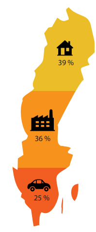
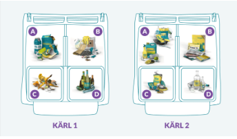
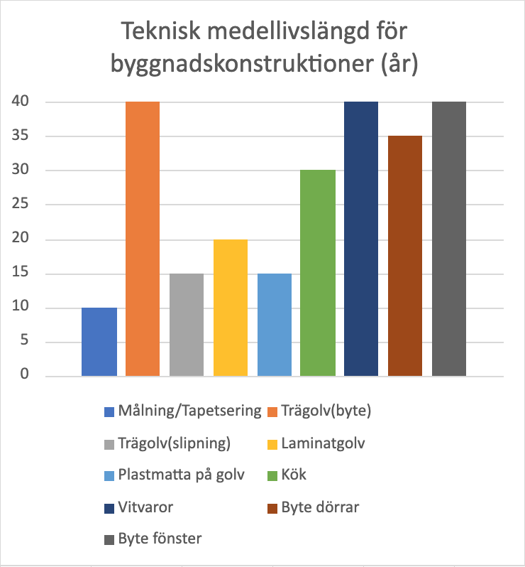
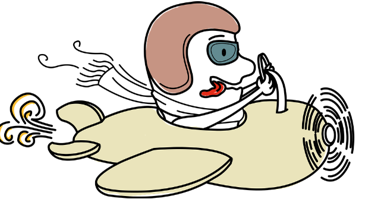

Yttersjö kommun
Hållbar utveckling är ett brett ämne, det handlar inte enbart om att bevara miljön som är det mest kända aspekten av hållbar utveckling utan det handlar även om att hjälpa människor runt om än sig själv och människor som har det sämre än sig själv. För att enkelt besvara frågan, Vad är hållbar utveckling? så kan man definiera det som att göra det bäst för alla människor, inte bara människorna som bor i ditt land, inte bara människorna som du håller kära och inte bara för människorna som lever idag. Vi måste vara bättre än människorna som kom innan oss. Hållbar utveckling gör vi för människorna som kommer efter oss, för att undvika en framtid där planeten präglas av naturkatastrofer och människor lider som bland annat vi och människor som levt tidigare har bidragit till. Men hur kan en privatperson hjälpa till med det? tänker du, jo här kommer fyra bitar av information samt tips som kan hjälpa dig med att bidra till att skapa en bättre framtid.
Den totala energiförbrukningen i hela Sverige består till största del av hushållet och servicen. Därför om klimatpåverkan ska kunna minska kräver det både tekniska förändringar samt allmänhetens uppförande. I bilden kan man tydligt se andelen av den totala energin som förbrukas inom bostäder, industri och transporter. Bostäder, lokaler och övrig service motsvara 39% och cirka 60% av detta används för uppvärmning samt varmvatten. Vilket betyder att 40% står för elen i hemmet. Samhällets energiförbrukning räkna med att fortsätta öka och eftersom all elförbrukning på något sätt orsakar till den globala uppvärmningen bör vi tänka ur en hållbar elanvändning som utgår ifrån förnybar energi. Exempelvis vattenkraft, vindkraft och solenergi. Förnybar energi är sådan innebär att det förnyas hela tiden, jämfört med icke förnybara energi som ' inte kan förnyas eller ske i en mycket lång tidsperiod. Men hur kan vi som privatperson göra för att minska klimatpåverkan? Se till att stänga av elektroniken som inte används, t.ex släck lampor när du går därifrån. Byt ut ljuskällan som drar mycket el. Avstå från standby läget. Standby läget är när en apparat som antingen är på eller avstäng, vilket fortfarande drar strömmen i onödan. T.ex en avstängd dator, men displayen är fortfarande igång för att dator är inkopplade. Därför att det viktig att kopplar ur strömsladden. Tar en kortare dusch, sänka värme i elementet och cyklar istället för att tar bilen

Sopor och sortering: BorhanAtt bidra till ett hållbart samhälle är viktigt men hur kan vi göra det som privatpersoner, Jo vi kan bland annat återvinna och sortera sopor. Våra sopor innehåller både värdefulla ämnen som går att återanvända för att skapa nya produkter, men de innehåller också farliga ämnen som kan förstöra ekosystem samt skada djur, insekter och även oss människor. Om det inte är tillräckligt för att övertyga dig att börja sortera sopor kan vi ta upp att förbränning av sopor bidrar med ca 20 % av fjärrvärmen som vi använder i våra hus Hur sorterar du rätt? Jo för att enkelt kunna veta hur du ska sortera så kan du bland annat söka på google eller efter företaget som har hand om sorteringen i området du bor i. Sedan kan du titta på deras hemsidor som oftast innehåller en klar bild på hur de vill att saker ska se ut. Så här ska det se ut för bland annat de som bor i Umeå .

Klimatsmart hemrenovering är processen att göra förbättringar på ett hem för att minska dess koldioxidavtryck och göra det mer energieffektivt. Detta kan innefatta saker som att uppgradera till energieffektiva apparater och belysning, förbättra isoleringen och lufttätheten eller installera förnybara energisystem som solpaneler. Genom att göra dessa förändringar kan hemägare spara pengar på sina energiräkningar, minska sin påverkan på miljön och göra sina hem mer bekväma och hållbara.
Hållbar utveckling innefattar 17 Globala mål från Agenda 2030 som FN har satt upp för att bl.a. lösa klimatkrisen. Hållbar konsumtion och produktion är mål 12 av dessa 17 och består av många delmål som kan vara applicerbara vid just renovering. Detta mål kan vara bra att ha i åtanke när man renoverar hemma. Det kan innebära att man väljer att använda material och produkter som är långsiktigt hållbara och som har låg påverkan på miljön, t.ex genom att välja återvinningsbara material eller produkter som är tillverkade av miljövänliga råvaror. Man kan också sträva efter att minimera avfallet genom att återanvända och återvinna så mycket som möjligt under renoveringsprocessen.
Olika material har olika livslängd, oftast längre än vad vi tror. Ett badrum kan hålla i ungefär 20 år medan ett kök ofta håller upp till 30 år, beroende på hur ofta det används. Det kan vara bra att komma ihåg dessa tumregler när man funderar på om det är dags att renovera. För att veta om det är dags att byta ut olika material i hemmet kan det vara bra att veta deras livslängd.
Om man har bestämt sig för att det är dags för en större renovering i hemmet är det viktigt att man hanterar avfallet på rätt sätt. Följ den här länken för att få information om hur du ska sortera ditt avfall under en renovering. På så sätt kan du bidra till en mer hållbar utveckling och hjälpa till att skydda miljön.

Det finns en hel del vi kan göra med vårt resande för att minska våra utsläpp och bidra till en hållbar utveckling för samhället. Har man mindre än 5 km till jobbet eller skolan så kan man välja att gå, cykla eller ta bussen. Att välja att gå eller cykla tar lite plats jämfört med en bil, samt att det sliter mindre på vägarna i det långa loppet. Det bidrar då till att mindre underhåll av vägar behöver utföras. Om det är en vanlig ledbuss för stadstrafik man åker med så kan den ta upp emot 40 passagerare. En enda buss i det fallet kan då ersätta ungefär 26 bilar på vägarna. Då kan tid och pengar läggas på att istället utveckla vägnätet. För hushållet innebär det oftast också en lägre kostnad. I det långa loppet så mår människor och djur bättre då mängden buller minskar kraftigt
Vid resor som är mer är 5 km kan det fortfarande gå bra för den som är van vid att cykla att fortsätta göra det. Om bussförbindelsen är bra så är det självklart också ett bra alternativ. Vill man däremot spara lite tid så kan man välja att att bilen vid denna reslängd. Även om det låter lite motsägelsefullt till en början så finns det mycket man kan göra för att förbättra hållbarheten och minska utsläppen från biltrafiken. Man kan börja med en bil som har en låg bränsleförbrukning, en medelstor bil antas släppa ut cirka 2 kg växthusgaser per mil. Det bidrar till att man spara pengar i det långa loppet samt påverkar det inte miljön lika hårt. Dessutom kan man samåka med flera personer som antingen bor eller jobbar på ungefär samma plats, då blir det snabbt mycket lägre utsläpp och billigare för var person som väljer att samåka. Dessutom bidrar det till mindre trafik på vägarna, därför minskar också slitaget på asfalten och utsläppet från stillastående trafik vid köer.
